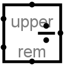

除法器
除法器
| 库: | 算术 |
| 介绍: | 2.0 Beta 22 |
| 外观符号: |  |
行为
该元件将通过西边输入传入的两个值相除，并在东边输出上输出商。 该元件的设计使其可以与其他除法器级联，以提供比单个除法器更多位数的被除数支持：上部输入提供被除数的较高 dataBits 位（如果 完全指定），并且 rem 位提供余数，可以将其作为 upper 输入馈送到另一个除法器中。
如果除数为 0，则不执行除法（即假定除数为 1）。
除法器本质上执行无符号除法。 也就是说，余数始终在 0 和divisor-1 之间。 商将始终是整数，因此
如果任一操作数包含一些浮动位或一些错误位，则元件的输出将是完全浮动值或完全错误值。
引脚
- 西边，北端（输入，位宽与数据位属性匹配）
- 被除数的低 数据位 位（即除法的第一个操作数）。
- 西边，南端（输入，位宽与数据位属性匹配）
- 除数（即除法的第二个操作数）
- 北边，标记为上（输入，位宽与数据位属性匹配）
- 被除数的高 dataBits 位（即除法的第一个操作数）。
- 东边（输出，位宽与数据位属性匹配）
- 商的低 dataBits 位，如上面指定的。
- 南边缘，标记为 rem （输出，位宽与数据位属性匹配）
- 分部的剩余部分。 该值始终介于 0 和除数-1 之间。
属性
选择或添加元件时，Alt-0 到 Alt-9 会更改其 数据位属性。
- 数据位
- 要除的值和结果的位宽。
Poke 工具行为
无
文本工具行为
无
返回 电路元件库参考手册